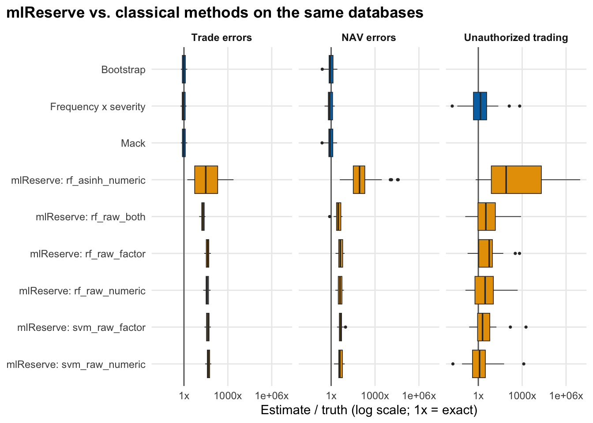

Code
events <- simulate_database(params, rep = 1)
sq <- build_square(events, "nav_error", "count", 40, 40, period = 4)$square
plot_triangle(sq, "NAV errors: event counts by origin year and discovery lag", "Events")
How well can each method estimate the undiscovered loss? Every method is scored against the known truth on 200 simulated databases per scenario. Sections: counts, dollar losses, validation across methods, stress tests and an experimental machine-learning comparator.
The first question is how many events are still undiscovered. The count triangle has the same shape as the amount triangle but each cell counts events, so it is free of the heavy-tailed severities that make amounts hard.
events <- simulate_database(params, rep = 1)
sq <- build_square(events, "nav_error", "count", 40, 40, period = 4)$square
plot_triangle(sq, "NAV errors: event counts by origin year and discovery lag", "Events")The target is the number of events inside the development window that are not yet discovered. Methods that need a tail beyond the window are not applied to counts.
score_gt(s, "count")| Method | Usable (of 200) | Failed | Suspect | Rel. bias | Median rel. error | Coverage (usable) | Recent-origin bias |
|---|---|---|---|---|---|---|---|
| Trade errors | |||||||
| Chain-ladder (vol-weighted) | 200 | 0 | 0 | 1% | 2% | - | 1% |
| Mack | 200 | 0 | 0 | 1% | 2% | 92% | 1% |
| Bootstrap | 200 | 0 | 0 | 1% | 3% | 86% | 1% |
| Clark LDF loglogistic | 0 | 0 | 200 | - | - | - | - |
| Clark LDF Weibull | 200 | 0 | 0 | 102% | 21% | 54% | 14% |
| NAV errors | |||||||
| Chain-ladder (vol-weighted) | 200 | 0 | 0 | 4% | 2% | - | 5% |
| Mack | 200 | 0 | 0 | 4% | 2% | 96% | 5% |
| Bootstrap | 200 | 0 | 0 | 6% | 5% | 96% | 7% |
| Clark LDF loglogistic | 189 | 0 | 11 | 13% | 14% | 91% | 9% |
| Clark LDF Weibull | 200 | 0 | 0 | 1% | −0% | 97% | 3% |
| Unauthorized trading | |||||||
| Chain-ladder (vol-weighted) | 200 | 0 | 0 | 19% | −36% | - | 19% |
| Mack | 0 | 200 | 0 | - | - | - | - |
| Bootstrap | 15 | 0 | 185 | −100% | −100% | 20% | −100% |
| Clark LDF loglogistic | 0 | 200 | 0 | - | - | - | - |
| Clark LDF Weibull | 0 | 200 | 0 | - | - | - | - |
| Relative bias = sum(estimate - truth) / sum(truth) over usable fits. Fits flagged failed or suspect are excluded from bias and counted as non-covering in coverage_all. Rows with fewer than 20 usable fits are not interpretable. | |||||||
plot_errors(res$reps, "count")
sc <- s |> filter(kind == "count", scenario == "baseline", granularity == "annual")
get <- \(t, m, col) sc[[col]][sc$type == t & sc$method == m]Quarterly triangles (40 x 40) are far sparser; see Method validation for the usable-fit rates.
Dollar-loss triangles are what a risk committee cares about, but they are the hard case: a single large event dominates a cell, and late-discovered events are larger.
The target is the undiscovered loss inside the 10-year window. The one tail-extrapolating method (Clark with a tail) is scored against the total including loss beyond the window.
score_gt(s, "amount")| Method | Usable (of 200) | Failed | Suspect | Rel. bias | Median rel. error | Coverage (usable) | Recent-origin bias |
|---|---|---|---|---|---|---|---|
| Trade errors | |||||||
| Chain-ladder (vol-weighted) | 200 | 0 | 0 | 1% | 3% | - | 2% |
| Mack | 200 | 0 | 0 | 1% | 3% | 94% | 2% |
| Bootstrap | 200 | 0 | 0 | 2% | 4% | 86% | 2% |
| Clark LDF loglogistic | 0 | 0 | 200 | - | - | - | - |
| Clark LDF Weibull | 200 | 0 | 0 | 94% | 41% | 54% | 14% |
| Clark LDF loglogistic + tail | 0 | 0 | 200 | - | - | - | - |
| Clark Cape Cod Weibull | 200 | 0 | 0 | 254% | 257% | 0% | 35% |
| Frequency x severity | 200 | 0 | 0 | −2% | −1% | 92% | −1% |
| NAV errors | |||||||
| Chain-ladder (vol-weighted) | 200 | 0 | 0 | 10% | −3% | - | 7% |
| Mack | 200 | 0 | 0 | 10% | −3% | 92% | 7% |
| Bootstrap | 200 | 0 | 0 | 14% | 2% | 90% | 10% |
| Clark LDF loglogistic | 197 | 0 | 3 | 14% | 11% | 89% | 10% |
| Clark LDF Weibull | 200 | 0 | 0 | 2% | −5% | 90% | 4% |
| Clark LDF loglogistic + tail | 197 | 0 | 3 | 124% | 30% | 89% | 31% |
| Clark Cape Cod Weibull | 200 | 0 | 0 | 0% | 0% | 94% | 3% |
| Frequency x severity | 200 | 0 | 0 | −7% | −6% | 90% | −1% |
| Unauthorized trading | |||||||
| Chain-ladder (vol-weighted) | 200 | 0 | 0 | 866% | −42% | - | 2,641% |
| Mack | 0 | 200 | 0 | - | - | - | - |
| Bootstrap | 15 | 0 | 185 | −100% | −100% | 20% | −100% |
| Clark LDF loglogistic | 0 | 200 | 0 | - | - | - | - |
| Clark LDF Weibull | 0 | 200 | 0 | - | - | - | - |
| Clark LDF loglogistic + tail | 0 | 200 | 0 | - | - | - | - |
| Clark Cape Cod Weibull | 0 | 200 | 0 | - | - | - | - |
| Frequency x severity | 200 | 0 | 0 | −4% | −29% | 63% | 26% |
| Relative bias = sum(estimate - truth) / sum(truth) over usable fits. Fits flagged failed or suspect are excluded from bias and counted as non-covering in coverage_all. Rows with fewer than 20 usable fits are not interpretable. | |||||||
plot_errors(res$reps, "amount", methods = c("chainladder", "mack", "boot", "freq_x_sev", "clark_ldf_weibull"))
sc <- s |> filter(kind == "amount", scenario == "baseline", granularity == "annual")
get <- \(t, m, col) sc[[col]][sc$type == t & sc$method == m]
tail_share <- res$reps |>
filter(method == "chainladder", kind == "amount", scenario == "baseline", granularity == "annual") |>
summarise(share = 1 - sum(truth_window) / sum(truth_total), .by = type)
ts <- setNames(tail_share$share, tail_share$type)Because the data are synthetic, every method can be scored against the true undiscovered amount. We generate 200 independent databases per scenario, fit each method to each, and record bias, error and interval coverage. A fit is usable only if the method ran and passed sanity checks; fits that error out (failed) or return an implausible result (suspect, for example a bootstrap IBNR of zero when a deterministic chain-ladder says otherwise) are excluded from bias figures and counted as misses for coverage.
These are tests of how methods behave under this simulator, not proof of how they behave on any real firm’s data.
plot_scorecard(s, "amount")
plot_scorecard(s, "count")
A well-calibrated 95% interval should contain the truth about 95% of the time. Methods whose intervals are narrower than the true uncertainty fall left of the dashed line.
plot_coverage(s, "amount")
Finer triangles contain more empty cells. The share of fits that were usable:
s |>
filter(scenario == "baseline", kind == "amount", method %in% c("mack", "boot", "clark_ldf_weibull", "freq_x_sev")) |>
label_scores() |>
select(Type = type, Method = method, granularity, usable_rate) |>
pivot_wider(names_from = granularity, values_from = usable_rate) |>
arrange(Type, Method) |>
gt::gt(groupname_col = "Type") |>
gt::fmt_percent(c(annual, quarterly), decimals = 0) |>
gt::cols_label(annual = "Annual (10 x 10)", quarterly = "Quarterly (40 x 40)")| Method | Annual (10 x 10) | Quarterly (40 x 40) |
|---|---|---|
| Trade errors | ||
| Mack | 100% | 100% |
| Bootstrap | 100% | 100% |
| Clark LDF Weibull | 100% | 100% |
| Frequency x severity | 100% | 100% |
| NAV errors | ||
| Mack | 100% | 0% |
| Bootstrap | 100% | 0% |
| Clark LDF Weibull | 100% | 0% |
| Frequency x severity | 100% | 100% |
| Unauthorized trading | ||
| Mack | 0% | 0% |
| Bootstrap | 8% | 8% |
| Clark LDF Weibull | 0% | 0% |
| Frequency x severity | 100% | 100% |
res$reps |>
filter(scenario == "baseline", kind == "amount", granularity == "annual", status %in% c("failed", "suspect")) |>
mutate(reason = case_when(
grepl("NA/NaN/Inf", message) ~ "Package error: development factors undefined (empty column)",
grepl("optimiser bound", message) ~ "Growth-curve parameter at optimiser bound",
grepl("bootstrap mean IBNR", message) ~ "Bootstrap returned ~0 where chain-ladder does not",
grepl("error in evaluating", message) ~ "Package error inside growth-curve fit",
TRUE ~ substr(message, 1, 60)
)) |>
count(Method = method_lab[method], Status = status, Reason = reason, name = "Fits") |>
arrange(desc(Fits)) |>
slice_head(n = 12) |>
gt::gt() |>
gt::tab_source_note("Baseline, annual, dollar triangles; all three event types, 200 databases each.")| Method | Status | Reason | Fits |
|---|---|---|---|
| Clark LDF loglogistic | suspect | Growth-curve parameter at optimiser bound | 203 |
| Clark LDF loglogistic + tail | suspect | Growth-curve parameter at optimiser bound | 203 |
| Clark Cape Cod Weibull | failed | Package error inside growth-curve fit | 200 |
| Clark LDF Weibull | failed | Package error inside growth-curve fit | 200 |
| Clark LDF loglogistic | failed | Package error inside growth-curve fit | 200 |
| Clark LDF loglogistic + tail | failed | Package error inside growth-curve fit | 200 |
| Mack | failed | Package error: development factors undefined (empty column) | 200 |
| Bootstrap | suspect | Bootstrap returned ~0 where chain-ladder does not | 185 |
| Baseline, annual, dollar triangles; all three event types, 200 databases each. | |||
Chain-ladder methods assume that the pattern of past development carries forward. Three scenarios break that assumption in different ways. All use annual triangles and the same 200 seeds as the baseline.
| Scenario | Why it is hard |
|---|---|
| Heavy-tail shock | Two very large unauthorized-trading losses sit inside the window |
| Control improvement | Detection gets faster partway through, so history over-predicts future development |
| Exposure growth | Rising volume distorts comparisons across origin periods |
Relative errors explode when the true value is near zero (as it is after a control improvement), so this page shows absolute dollars: the mean undiscovered loss in the window, true and estimated, for the methods that run.
d <- res$reps |>
add_target() |>
filter(kind == "amount", granularity == "annual", status == "ok", is.finite(est),
method %in% c("chainladder", "mack", "boot", "freq_x_sev")) |>
summarise(Estimate = mean(est), Truth = mean(truth), n = n(), .by = c(scenario, type, method)) |>
mutate(scenario = factor(scenario, levels = c("baseline", "heavy_tail_shock", "control_improvement", "exposure_growth")), type = factor(type_lab[type], levels = type_lab), method = factor(method_lab[method], levels = method_order))
truth <- d |> distinct(scenario, type, Truth)
ggplot(d, aes(method, Estimate)) +
geom_col(fill = "#0072B2", alpha = 0.8, width = 0.7) +
geom_hline(data = truth, aes(yintercept = Truth), colour = "#D55E00", linewidth = 0.9) +
facet_grid(type ~ scenario, scales = "free_y", labeller = labeller(scenario = \(x) str_replace_all(x, "_", " "))) +
scale_y_continuous(labels = fmt_usd) +
scale_x_discrete(guide = guide_axis(angle = 40)) +
labs(x = NULL, y = "Mean undiscovered loss in window", title = "Estimated (bars) vs. true (orange line)", subtitle = "Bars use only fits that were usable; for unauthorized trading Mack/Bootstrap are usually missing") +
theme_op() +
theme(axis.text.x = element_text(size = 7))
d |>
mutate(`Error` = Estimate - Truth) |>
arrange(scenario, type, method) |>
filter(scenario != "baseline") |>
select(Scenario = scenario, Type = type, Method = method, `Usable fits` = n, Truth, Estimate, Error) |>
mutate(Scenario = str_replace_all(Scenario, "_", " ")) |>
gt::gt(groupname_col = "Scenario") |>
gt::fmt_currency(c(Truth, Estimate, Error), decimals = 0, suffixing = TRUE)| Type | Method | Usable fits | Truth | Estimate | Error |
|---|---|---|---|---|---|
| heavy tail shock | |||||
| Trade errors | Chain-ladder (vol-weighted) | 200 | $192K | $191K | −$1K |
| Trade errors | Mack | 200 | $192K | $191K | −$1K |
| Trade errors | Bootstrap | 200 | $192K | $191K | −$1K |
| Trade errors | Frequency x severity | 200 | $192K | $182K | −$10K |
| NAV errors | Chain-ladder (vol-weighted) | 200 | $3M | $3M | $277K |
| NAV errors | Mack | 200 | $3M | $3M | $277K |
| NAV errors | Bootstrap | 200 | $3M | $3M | $397K |
| NAV errors | Frequency x severity | 200 | $3M | $3M | −$243K |
| Unauthorized trading | Chain-ladder (vol-weighted) | 200 | $44M | $446M | $402M |
| Unauthorized trading | Bootstrap | 3 | $43M | $0 | −$43M |
| Unauthorized trading | Frequency x severity | 200 | $44M | $30M | −$15M |
| control improvement | |||||
| Trade errors | Chain-ladder (vol-weighted) | 200 | $616 | $116K | $116K |
| Trade errors | Mack | 200 | $616 | $116K | $116K |
| Trade errors | Bootstrap | 200 | $616 | $119K | $118K |
| Trade errors | Frequency x severity | 200 | $616 | $110K | $109K |
| NAV errors | Chain-ladder (vol-weighted) | 200 | $273K | $3M | $3M |
| NAV errors | Mack | 200 | $273K | $3M | $3M |
| NAV errors | Bootstrap | 200 | $273K | $3M | $3M |
| NAV errors | Frequency x severity | 200 | $273K | $2M | $2M |
| Unauthorized trading | Chain-ladder (vol-weighted) | 200 | $2M | $21M | $19M |
| Unauthorized trading | Frequency x severity | 200 | $2M | $8M | $6M |
| exposure growth | |||||
| Trade errors | Chain-ladder (vol-weighted) | 200 | $392K | $402K | $10K |
| Trade errors | Mack | 200 | $392K | $402K | $10K |
| Trade errors | Bootstrap | 200 | $392K | $402K | $10K |
| Trade errors | Frequency x severity | 200 | $392K | $384K | −$8K |
| NAV errors | Chain-ladder (vol-weighted) | 200 | $6M | $6M | $173K |
| NAV errors | Mack | 200 | $6M | $6M | $173K |
| NAV errors | Bootstrap | 200 | $6M | $6M | $309K |
| NAV errors | Frequency x severity | 200 | $6M | $5M | −$562K |
| Unauthorized trading | Chain-ladder (vol-weighted) | 200 | $9M | $44M | $35M |
| Unauthorized trading | Bootstrap | 2 | $5M | $0 | −$5M |
| Unauthorized trading | Frequency x severity | 200 | $9M | $10M | $1M |
ci <- d |> filter(scenario == "control_improvement", method == "Mack", type == "Trade errors")
ht <- res$reps |> add_target() |> filter(scenario == "heavy_tail_shock", kind == "amount", granularity == "annual", type == "unauthorized_trading", method == "freq_x_sev", status == "ok") |>
summarise(cov = mean(lo <= truth & truth <= hi, na.rm = TRUE), bias = sum(est - truth) / sum(truth))mlReserve() comes from a personal fork of the ChainLadder package (thierrymoudiki/ChainLadder, pinned to commit 30cc7a84, package version 0.2.22), not from CRAN. Its published evidence is a blog post using simulated insurance triangles. It was installed into an isolated library so the CRAN ChainLadder used on every other page is unaffected. Nothing on this page feeds the executive summary.
mlReserve() fits a machine-learning regression (here a random forest from ranger or a support vector machine from e1071) to the observed cells of a triangle, using origin and development period as features, and predicts the unobserved cells. It is a different idea from chain-ladder’s multiplicative development factors.
Same simulated databases as the baseline validation (replications 1-30), annual dollar triangles, scored on the undiscovered loss inside the window. Four configurations are run and all are reported; none was chosen using the true values. The first is the setting used in the blog post. Point estimates only (no bootstrap intervals).
tibble(Configuration = names(cfg$configs),
Learner = map_chr(cfg$configs, "learner"), Features = map_chr(cfg$configs, "features"), Transform = map_chr(cfg$configs, "transform")) |>
gt::gt()| Configuration | Learner | Features | Transform |
|---|---|---|---|
| rf_asinh_numeric | ranger | numeric | asinh |
| rf_raw_numeric | ranger | numeric | none |
| rf_raw_both | ranger | both | none |
| rf_raw_factor | ranger | factor | none |
| svm_raw_numeric | svm | numeric | none |
| svm_raw_factor | svm | factor | none |
ref <- res$reps |>
filter(scenario == "baseline", granularity == "annual", kind == "amount", rep <= cfg$n_reps,
method %in% c("mack", "boot", "freq_x_sev")) |>
transmute(type, config = method_lab[method], est = if_else(status == "ok", est, NA_real_), truth = truth_window, rep)
mlr <- ml$results |> transmute(type, config = paste("mlReserve:", config), est = if_else(status == "ok", est, NA_real_), truth, rep)
cmp <- bind_rows(ref, mlr)
sc_ml <- cmp |>
summarise(
usable = sum(is.finite(est)),
rel_bias = sum(est - truth, na.rm = TRUE) / sum(truth[is.finite(est)]),
median_ratio = median(est / truth, na.rm = TRUE),
.by = c(type, config)
) |>
mutate(type = factor(type_lab[type], levels = type_lab)) |>
arrange(type, config)sc_ml |>
gt::gt(groupname_col = "type") |>
gt::fmt_percent(rel_bias, decimals = 0) |>
gt::fmt_number(median_ratio, decimals = 2) |>
gt::cols_label(config = "Method", usable = "Usable fits", rel_bias = "Relative bias", median_ratio = "Median estimate / truth") |>
gt::sub_missing(missing_text = "-")| Method | Usable fits | Relative bias | Median estimate / truth |
|---|---|---|---|
| Trade errors | |||
| Bootstrap | 30 | −1% | 0.97 |
| Frequency x severity | 30 | −7% | 0.91 |
| Mack | 30 | −1% | 0.96 |
| mlReserve: rf_asinh_numeric | 30 | 19,597% | 30.89 |
| mlReserve: rf_raw_both | 30 | 1,813% | 19.88 |
| mlReserve: rf_raw_factor | 30 | 3,888% | 41.31 |
| mlReserve: rf_raw_numeric | 30 | 3,666% | 38.19 |
| mlReserve: svm_raw_factor | 30 | 4,085% | 43.21 |
| mlReserve: svm_raw_numeric | 30 | 4,482% | 46.25 |
| NAV errors | |||
| Bootstrap | 30 | −1% | 0.86 |
| Frequency x severity | 30 | −16% | 0.78 |
| Mack | 30 | −4% | 0.84 |
| mlReserve: rf_asinh_numeric | 30 | 339,214% | 87.44 |
| mlReserve: rf_raw_both | 30 | 212% | 3.03 |
| mlReserve: rf_raw_factor | 30 | 321% | 4.22 |
| mlReserve: rf_raw_numeric | 30 | 300% | 4.03 |
| mlReserve: svm_raw_factor | 30 | 321% | 4.46 |
| mlReserve: svm_raw_numeric | 30 | 315% | 3.92 |
| Unauthorized trading | |||
| Bootstrap | 1 | −100% | 0.00 |
| Frequency x severity | 30 | 37% | 1.40 |
| Mack | 0 | - | - |
| mlReserve: rf_asinh_numeric | 30 | 17,670,308% | 135.61 |
| mlReserve: rf_raw_both | 30 | 633% | 5.05 |
| mlReserve: rf_raw_factor | 30 | 492% | 5.65 |
| mlReserve: rf_raw_numeric | 30 | 432% | 3.73 |
| mlReserve: svm_raw_factor | 30 | 114% | 2.32 |
| mlReserve: svm_raw_numeric | 30 | 29% | 1.26 |
cmp |>
filter(is.finite(est), truth > 0) |>
mutate(ratio = est / truth, type = factor(type_lab[type], levels = type_lab),
ml = str_detect(config, "^mlReserve")) |>
ggplot(aes(ratio, fct_rev(config), fill = ml)) +
geom_vline(xintercept = 1, colour = "grey40") +
geom_boxplot(outlier.size = 0.6, linewidth = 0.3) +
facet_wrap(~type, nrow = 1) +
scale_x_log10(labels = \(x) paste0(x, "x")) +
scale_fill_manual(values = c(`TRUE` = "#E69F00", `FALSE` = "#0072B2"), guide = "none") +
labs(x = "Estimate / truth (log scale; 1x = exact)", y = NULL, title = "mlReserve vs. classical methods on the same databases") +
theme_op()
mlsc <- sc_ml |> filter(str_detect(config, "^mlReserve"))
closest <- \(t) mlsc |> filter(type == t) |> slice_min(abs(log(median_ratio)), n = 1)
worst <- \(t) mlsc |> filter(type == t) |> slice_max(abs(log(median_ratio)), n = 1)
mack <- \(t) sc_ml |> filter(type == t, config == "Mack")
nav_c <- closest("NAV errors"); trade_c <- closest("Trade errors"); un_c <- closest("Unauthorized trading")
asinh_trade <- sc_ml |> filter(type == "Trade errors", config == "mlReserve: rf_asinh_numeric")mlReserve configuration overestimates on the two event types where classical methods work. For NAV errors the closest configuration (mlReserve: rf_raw_both) has a median estimate/truth ratio of 3, against 0.84 for Mack. For trade errors the closest (mlReserve: rf_raw_both) is 20x the truth, against 0.96 for Mack.asinh transform, applied to dollar values, gives a median ratio of 31 for trade errors, worse than the same learner with no transform in the cases we ran; it may be calibrated for much smaller numeric scales, and we did not test rescaling the data first.Taken together, this is a limited test, on one data-generating process, with no tuning, of an unreleased fork. It gives no support for using mlReserve here, and it does not show that the approach cannot work with more data or tuning.